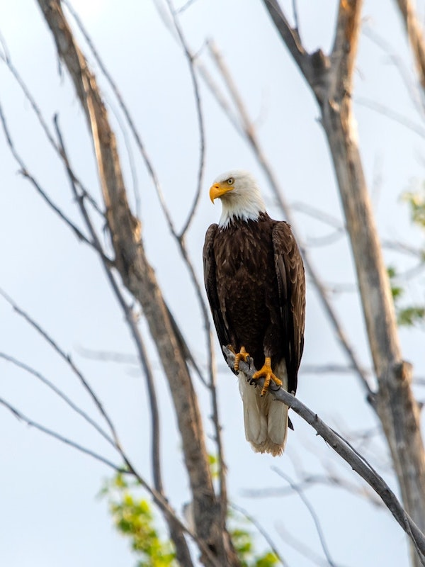
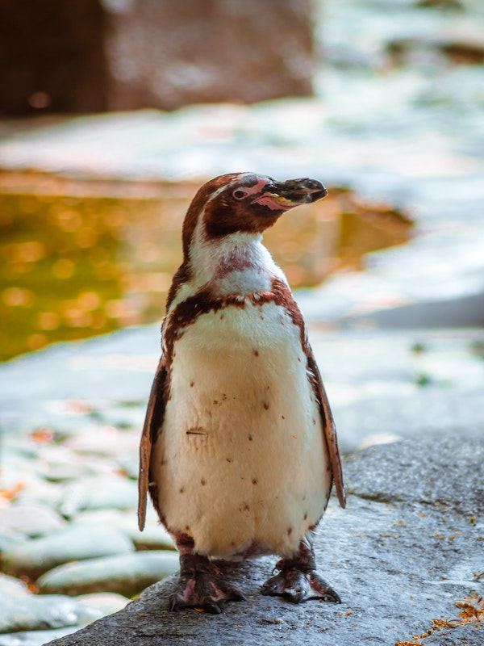

Fantastic Animals
-

-

-

-

- 
- 
Fox
Renowned for their striking beauty and cleverness, foxes are truly extraordinary creatures.
They are primarily solitary animals, but have a rich and nuanced array of vocalizations and behaviors for communication and expression. Highly adaptable, foxes can be found in a variety of habitats, from the arctic tundra to deserts and even urban environments.
They are nocturnal hunters, exhibiting incredible agility and cunning in pursuing their prey. The fox's playful nature and elegant agility have led to its revered status in numerous cultural and folklore tales across the globe.
Known for their intelligence and resourcefulness, foxes symbolize the beautiful mystery and vivacity of the wild.
Squirrel
Squirrels are delightful creatures, known for their agility and resourcefulness.
Whether leaping between trees or diligently gathering nuts for the winter, their energetic and industrious nature brings life to forests and urban parks alike.
Squirrels' adaptability to different environments, coupled with their unique ability to find their buried food, showcases their intelligence and survival skills, making them small but mighty members of the animal kingdom.
Bear
Bears are awe-inspiring animals, embodying both power and gentleness. They are symbols of strength, courage, and endurance.
From the fierce grizzly bear to the tranquil panda munching on bamboo, bears demonstrate a remarkable adaptability to various habitats.
They also exhibit complex behaviors, such as mother bears' profound dedication to raising their cubs, and the impressive hibernation process that allows them to survive harsh winters.
Their multifaceted nature truly makes them fantastic and deeply respected animals.
Wolf
Wolves are fascinating animals, known for their strength, intelligence, and intricate pack dynamics.
Living in a highly organized social structure, every wolf in the pack has a role to play, mirroring human societal organization.
Their expressive communication, through body language and haunting howls, symbolizes the untamed beauty of the wilderness.
Wolves represent the very essence of freedom and instinctual wisdom.
Eagle
Eagles are magnificent birds of prey, admired for their power and grace.
Their sharp eyesight, capable of spotting prey from miles away, symbolizes vision, freedom, and transcendence.
As they soar high above the earth, eagles embody the spirit of resilience and supremacy, ruling the skies with their majestic presence.
Their regality has made them emblematic in many cultures and traditions.
Penguin
Penguins are endearing animals, iconic for their unique, upright waddle and black-and-white plumage.
These flightless birds are perfectly adapted to marine life, with a streamlined body built for swift and agile swimming.
Penguins also exhibit strong social bonds and parental care, often braving harsh Antarctic conditions in the name of survival and reproduction.
Their resilience is a testament to the unfaltering spirit of the animal kingdom.
FAQ
- What do these animals - the fox, penguin, wolf, eagle, squirrel, and bear - have in common?
- Despite their differences in habitats, diets, and behaviors, these animals share some fascinating commonalities. They all exhibit exceptional adaptability, thriving in various environments across the globe, from the cold Arctic tundra to the heat of the desert and even bustling urban environments. They also display complex social or communication behaviors - wolves in their pack dynamics, squirrels in their communal food gathering, penguins in their huddling and parenting, bears in their maternal care, and foxes and eagles in their expressive vocalizations and signals. These shared traits underscore their resilience, intelligence, and the intricate balance of life in the animal kingdom.
- What are some notable survival strategies used by these animals?
- Each of these animals has developed unique survival strategies over time. For instance, bears hibernate during winter, lowering their body temperature and slowing their metabolism to conserve energy. Similarly, squirrels gather and store food in the warmer months to survive the colder months. Penguins huddle together in colonies to withstand the harsh Antarctic weather, and foxes use their acute hearing and stealth to hunt effectively. Eagles use their superior vision and flight speed to spot and capture prey, while wolves work in coordinated packs to bring down larger prey.
- How have these animals adapted to urban environments?
- Certain species of these animals, like foxes and squirrels, have shown a remarkable ability to adapt to urban environments. Foxes have been known to forage for food in city trash bins and gardens, and some even live in dens built in urban parks. Squirrels thrive in city parks and backyards, where they can easily find food and nesting spots. On the other hand, urban environments pose significant challenges for animals like bears, wolves, and eagles, leading to conflicts and conservation concerns.
- Are these animals endangered?
- The conservation status of these animals varies. While some species or populations of bears, wolves, and eagles are considered endangered or threatened due to habitat loss, hunting, and pollution, others are thriving. Penguins are also facing threats from climate change, overfishing, and habitat disturbance, with several species classified as vulnerable or endangered. Foxes and squirrels are generally abundant, but certain species or populations may face local threats.
- Why are these animals important to their ecosystems?
- Each of these animals plays a critical role in their ecosystem. Wolves, as apex predators, help control the population of herbivores, which in turn maintains the health of vegetation. Bears and squirrels aid in seed dispersal, contributing to forest regeneration. Eagles also act as top predators and help control populations of small mammals and fish. Penguins contribute to nutrient cycling in their Antarctic ecosystem, and their population status can be an indicator of ocean health. Foxes control rodent and rabbit populations and their burrows provide shelter for other species. In this way, each animal contributes to the biodiversity and stability of their ecosystem.
Numbers
Wolfs
4874Foxes
5374Squirrels
12340Bears
230Contact
- jaqueduarteom@gmail.com
- +1 (416) 856-4171
- 12 York Sreet
- Toronto - ON
- Mon to Fri from 9am to 5pm